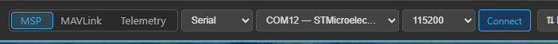
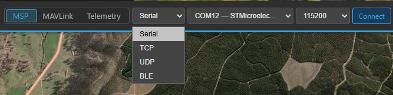
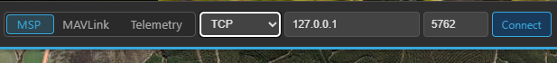
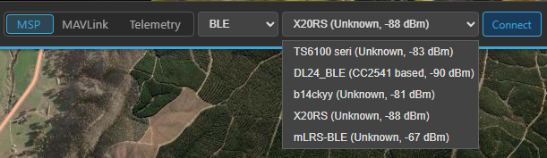

Connecting¶
This is the complete reference for every way Kite can link to an aircraft. If you just want to get connected over USB the first time, the first-connection walkthrough is the short version — this page covers all the transports and link modes in detail.
All connection controls live in the top bar, on the right, and only while you're disconnected. Once connected, they're replaced by the link status and a Disconnect button.

The connection controls: protocol, transport, and the transport-specific fields, then Connect.
The two choices: protocol and transport¶
Every connection is defined by two independent picks:
- Protocol — what language the link speaks: MSP, MAVLink, or Telemetry (passive).
- Transport — how the bytes travel: Serial, TCP, UDP, or BLE.
They're independent: you can run MSP over Bluetooth, MAVLink over TCP, passive telemetry over a serial adapter, and so on.
Protocol¶
| Protocol | Use it for | Direction |
|---|---|---|
| MSP | INAV flight controllers (7.0+) | Two-way (Kite polls the FC) |
| MAVLink | ArduPilot and PX4 | Two-way |
| Telemetry | A passive, listen-only downlink (SmartPort, CRSF, LTM, MAVLink) | Receive only — Kite never transmits |
The first two are normal bidirectional control links. Telemetry is special — see Passive telemetry below.
Transport¶
Pick the transport from the dropdown; the fields next to it change to match.
Serial → port + baud (+ rename button for Bluetooth ports)
TCP → host + port
UDP → host + port
BLE → device list (live scan)
Serial (USB & Bluetooth SPP)¶
Serial is the default and covers both USB cables and Bluetooth SPP (classic Bluetooth serial) COM ports — Windows and Linux present both as serial ports.
- Transport → Serial.
- Port — pick it from the list. The list refreshes by itself; a freshly plugged-in board is auto-selected. (Unsure which port is yours? Open the dropdown, unplug the board, reopen — the entry that vanished is it.)
- Baud rate — Kite presets it when you choose the protocol: 115200 for MSP, 57600 for MAVLink. Change it only if your FC/link uses a non-standard rate. Available rates: 9600, 19200, 38400, 57600, 115200, 230400, 460800, 921600.
- Connect.
Port already in use
A serial port can only be opened by one application at a time. If INAV Configurator, Mission Planner, or another GCS is connected to the same port, close that connection first.
Bluetooth SPP ports¶
A paired Bluetooth-SPP device shows up as a normal COM port (Windows) or rfcomm/tty device (Linux).
Kite recognises Windows Bluetooth-SPP ports and:
- Hides the incoming (local-server) port automatically, so you only see the outgoing port you actually connect through — no more guessing which of the two paired COM ports to use.
- Lets you give it a friendly name. Bluetooth COM ports have no useful OS description, so a port
shown as just
COM7 — Bluetoothcan be renamed (the ✎ button next to the port). The name is remembered per port and shown asCOM7 — My Wing.
First connection over Bluetooth fails with a timeout?
Bluetooth-SPP links sometimes fail the very first open with a Windows “semaphore timeout” (error 121) while the radio brings the channel up. Kite retries the open automatically. If it still fails, see Troubleshooting → Connection.

The transport dropdown: Serial, TCP, UDP, or BLE.
TCP and UDP (network links)¶
For network links — a SITL simulator, a companion computer, a Wi-Fi/serial bridge, or a MAVLink router forwarding to your PC.
- Transport → TCP or UDP.
- Host — the IP address or hostname to reach (e.g.
127.0.0.1for a local simulator, or the bridge's LAN address). - Port — the network port.
Kite fills in the usual MAVLink defaults and swaps them when you flip between TCP and UDP:
| Transport | Default port | Typical use |
|---|---|---|
| TCP | 5761 |
Local MAVLink endpoint |
| UDP | 14550 |
The standard MAVLink GCS port |
A custom port you've typed (for example SITL on 5762) is left untouched when you switch transport.
Protocol still applies
Choose the matching protocol for a network link too — MAVLink for an ArduPilot/PX4 simulator or router, MSP for an MSP-over-TCP bridge.

With TCP or UDP selected, the port fields become a host and a port.
BLE (Bluetooth Low Energy)¶
For BLE-to-serial adapters — the same kind INAV Configurator supports.
- Transport → BLE. Kite starts scanning immediately.
- Pick your device from the live list. Each entry shows its name, the matched profile, and the
signal strength (e.g.
SpeedyBee — SpeedyBee Type 2, -67 dBm). - Connect.
Recognised profiles: CC2541-based, Nordic NRF (NUS), SpeedyBee Type 1, and SpeedyBee Type 2. Devices that advertise a name but no known profile are listed as Unknown — you can still try to connect; the profile is matched during the connection. Known profiles are listed first, then sorted by signal strength.
Why some adapters appear late
Many BLE serial adapters don't advertise their service UUID until after a connection is opened, so Kite scans without a UUID filter and matches the profile on connect. Give the list a moment to populate.

The live BLE scan: each device shows its name, matched profile, and signal strength.
Passive telemetry (listen-only)¶
Set the protocol to Telemetry to monitor a one-way telemetry downlink without ever transmitting. Kite listens on the chosen transport and auto-detects the wire format:
- FrSky SmartPort
- TBS Crossfire (CRSF)
- LTM (Light Telemetry)
- MAVLink (push-only — Kite decodes the incoming stream but sends no heartbeat and never requests data)
This is for tapping a telemetry feed — e.g. a SmartPort/CRSF line off your receiver, a ground-side TX module, or a one-way MAVLink downlink — when you don't have (or don't want) a full control link. Because nothing is transmitted:
- There's no handshake — Kite starts decoding as soon as frames arrive.
- RC control is unavailable in this mode (no uplink to send channels), so its tab is hidden while passively connected.
- The detected sub-protocol is shown in the connection status box once it locks.
Passive telemetry works over any transport. On Serial, set the baud rate to match your telemetry source (e.g. SmartPort and CRSF have their own rates) — it isn't auto-detected.
Recording works in passive mode
Flight logging still runs while passively connected — arm/disarm is derived from the decoded telemetry, so passively monitored flights land in your logbook like any other.
Relay / forwarding (separate from connecting)¶
The ⇅ Relay button in the top bar is not a connection — it re-encodes your live telemetry and re-broadcasts it to other ground stations, handsets, or an antenna tracker, over a separate output. It's covered in its own guide: Relay & forwarding.
Next to it, ≡ Raw appears while you are connected: a read-only popup with every raw telemetry value the app holds — see Raw telemetry.
On a phone
The phone layout has no connection bar: tap the 🔗 chain-link button at the top-right of the map instead. The pop-out holds the same controls (protocol and transport, then port / host / device, Connect) plus the Relay button; the raw-telemetry popup is not available on the phone.
Android: the link keeps running in the background
While Kite is connected, Android shows a persistent notification with the aircraft, battery, flight mode and distance to home (Android 13+ asks for notification permission on the first connect — refusing only hides the notification). Minimising Kite or switching to another app keeps telemetry, the flight recording and the track running; when you come back the trail is complete. Switching the screen off is not held open: the link may drop, and on your return Kite either offers the usual recording prompt (continue / discard / save) or reconnects once.
After you connect¶
- The button becomes Disconnect; the top bar shows arming readiness, per-sensor health, battery and link quality; widgets start updating; your aircraft appears on the map once it has a GPS fix.
- INAV/MSP links additionally download the safe-home/autoland config and (on INAV 8.0+) geozones for the map overlay. MAVLink links download the geofence and rally points.
Reconnecting¶
Kite remembers your last protocol, transport, port/host, baud, and BLE device, so reconnecting is usually a single click on Connect. To drop the link, click Disconnect.
Trouble connecting?¶
Wrong baud rate, a port already held by another app, a Bluetooth first-open timeout, or a missing USB-serial driver are the usual culprits. The Troubleshooting → Connection page works through each.